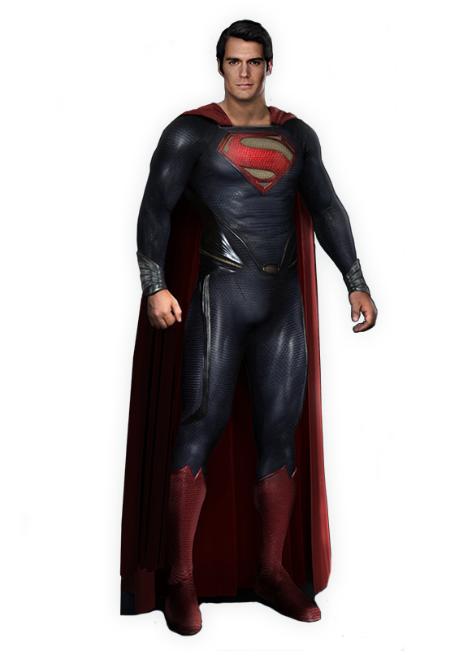
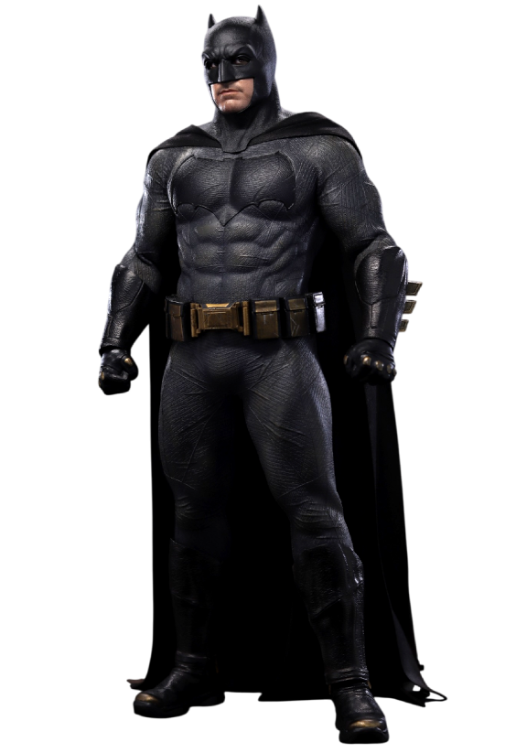
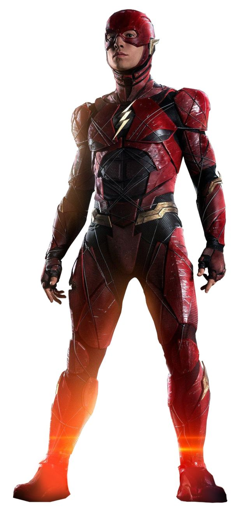
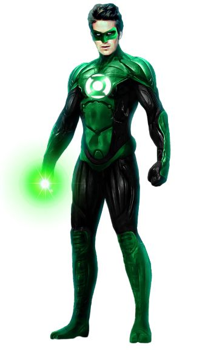
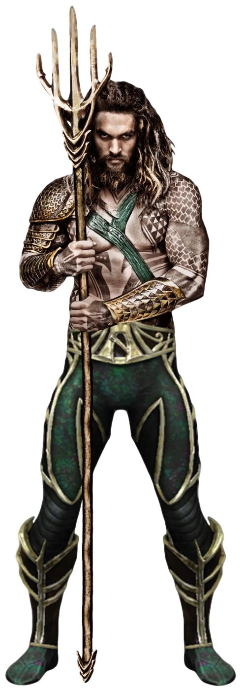

01 — MetrópolisSuperman
O último filho de Krypton simboliza esperança e usa seus poderes para proteger a humanidade.
Liga da Justiça
Personalidades diferentes. Habilidades extraordinárias. Uma missão em comum: proteger a Terra.

01 — MetrópolisO último filho de Krypton simboliza esperança e usa seus poderes para proteger a humanidade.

02 — GothamUm estrategista brilhante que combate o crime com inteligência, preparo e tecnologia.
 03 — Themyscira
03 — Themyscira
Princesa amazona, guerreira e diplomata que luta pela verdade, justiça e paz.

04 — Central CityConectado à Força de Aceleração, é capaz de correr e pensar em velocidade extraordinária.

05 — Setor 2814Seu anel transforma força de vontade em construções de energia quase sem limites.

06 — AtlântidaRei dos sete mares, conecta os mundos da superfície e dos oceanos.